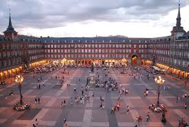
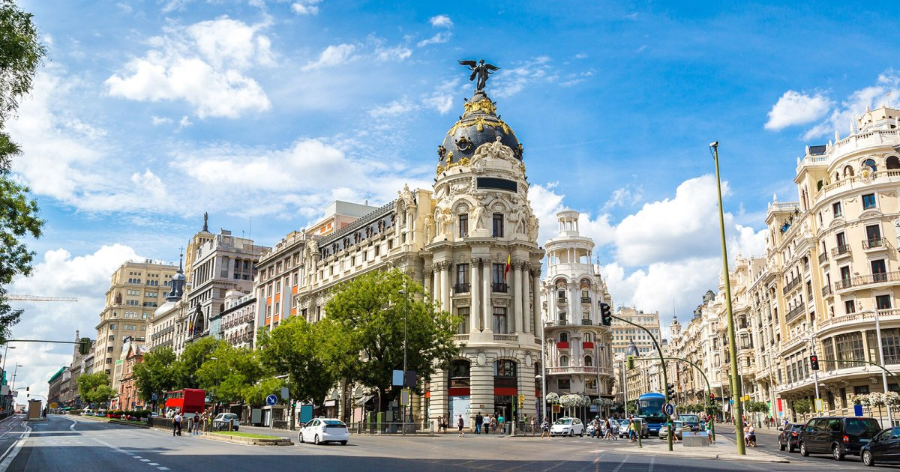
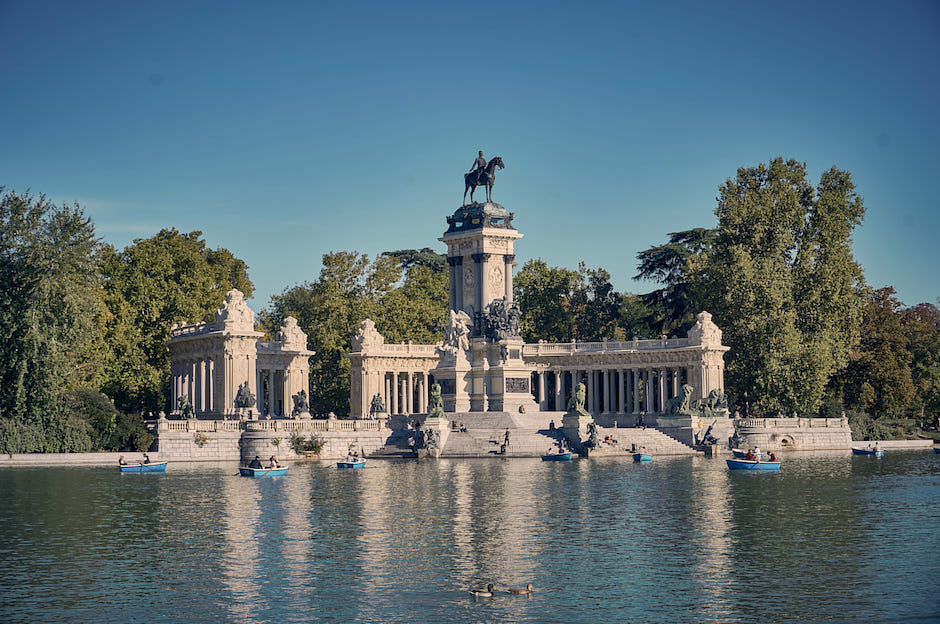
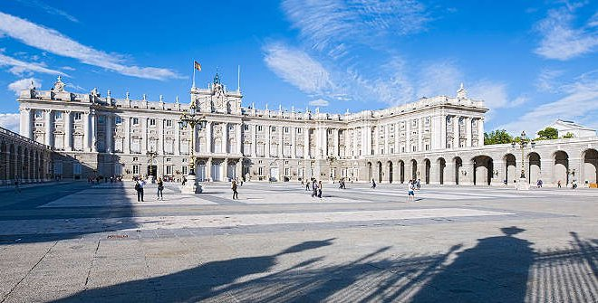
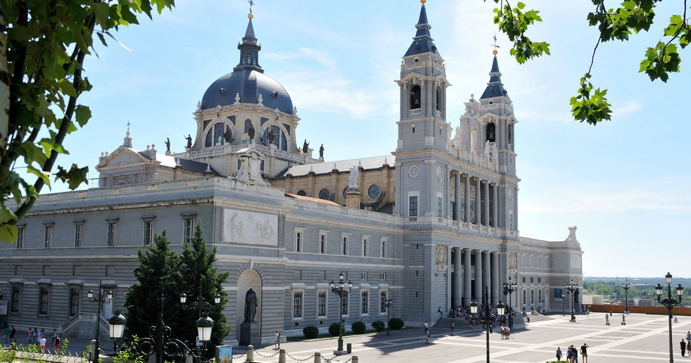
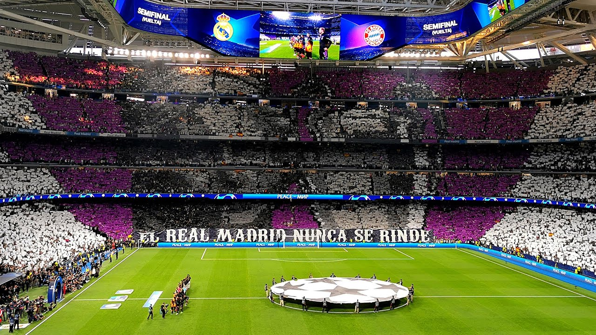

Madrid ist die Hauptstadt von Spanien und liegt genau in der Mitte des Landes. Die Stadt ist bekannt für ihre schönen alten Gebäude, großen Parks und das lebhafte Stadtleben. Hier gibt es immer etwas zu erleben – tagsüber und nachts.
In Madrid leben rund 3,3 Millionen Menschen. Damit ist sie eine der größten Städte in der EU. Interessant: Madrid liegt auf 667 Metern über dem Meeresspiegel und ist damit die höchstgelegene Hauptstadt in ganz Europa.
Das ist der Königspalast von Madrid. Er hat mehr als 3.000 Räume und ist damit eines der größten Schlösser in ganz Europa. Heute wohnt der König dort nicht mehr, aber man kann ihn besichtigen.
Dieser Platz gilt als das Herz von Madrid. Von hier aus werden alle Entfernungen in Spanien gemessen – deshalb befindet sich hier der sogenannte Nullkilometerpunkt des Landes.
Der Retiro ist ein riesiger Park mitten in der Stadt. Es gibt dort einen See, auf dem man Boote mieten kann, und sogar einen Glaspalast. Mit 15.000 Bäumen ist er eine echte grüne Oase.
Die Gran Vía ist Madrids bekannteste Einkaufsstraße. Hier gibt es viele Geschäfte, Kinos und Theater. Abends wird sie zur Partymeile – mit Musik, Restaurants und jeder Menge Trubel.
Das Prado-Museum ist eines der berühmtesten Kunstmuseen der Welt. Es zeigt Gemälde von bekannten Künstlern wie Velázquez und Goya. Ein Besuch lohnt sich auf jeden Fall!
Das Santiago-Bernabéu-Stadion ist die Heimat von Real Madrid – einem der erfolgreichsten Fußballvereine der Welt. Über 81.000 Fans passen in das riesige Stadion. Fußball ist hier Religion!
Die Menschen in Madrid – die sogenannten „Madrileños" – leben sehr entspannt und gesellig. Das Mittagessen findet oft erst um 14 Uhr statt, und abends isst man manchmal erst um 22 Uhr. Danach geht das Nachtleben richtig los!
Tapas sind kleine Snacks, die man in Bars zu einem Getränk bekommt – das ist ein echter Brauch in Spanien. Musik, Flamenco-Tanz und natürlich Fußball gehören fest zum Alltag in Madrid.





